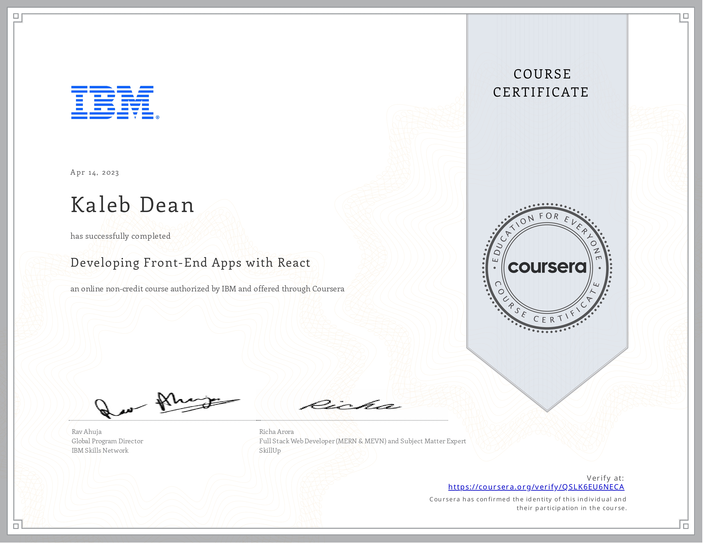
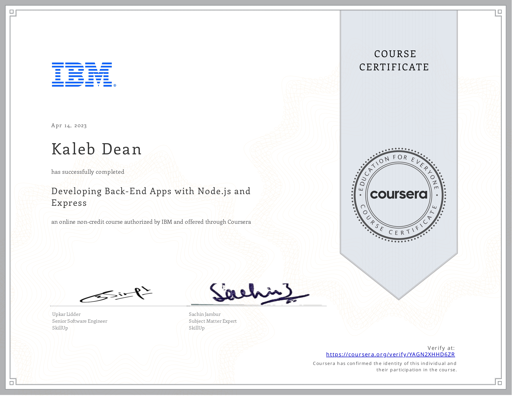
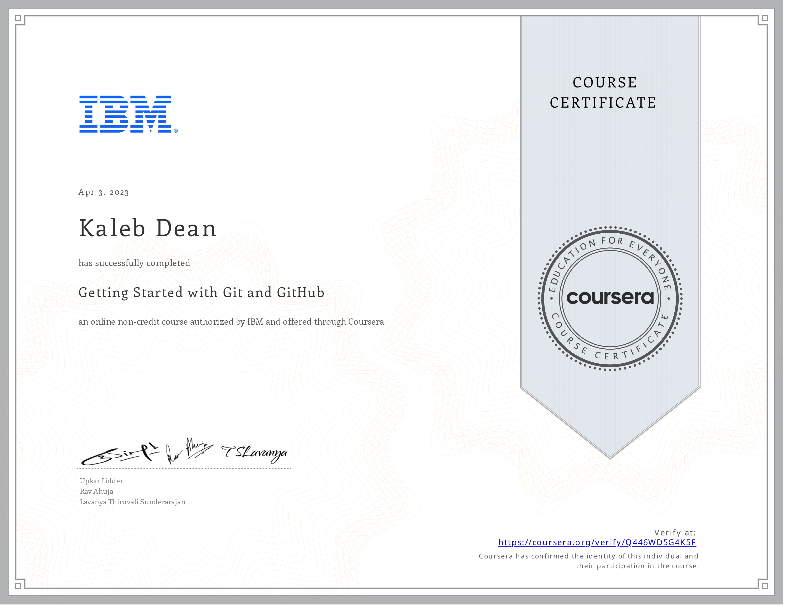
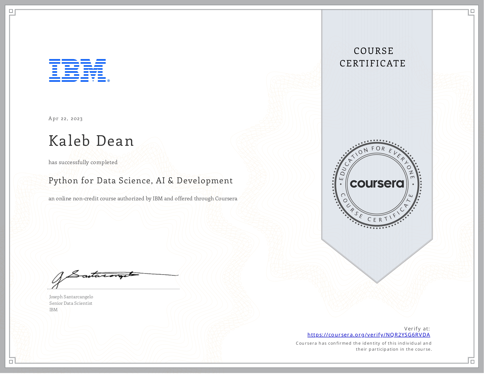

Charlotte, NC
(980) 486-7595
kad9603@gmail.com
Education
University of North Carolina at Charlotte
High Point University
Skills
Command-Line Interface, Github, DevOps, Version Control, Open Source Technology
Project Requirement Analysis, Full Stack Marketing and Sales, Customer Service, Writing, Graphic Design, Photography, Videography
Certifications
IBM Web Development with HTML, CSS, JavaScript
IBM Developing Front-End Apps with React

IBM Developing Back-End Apps with Node.js and Express

IBM Git and GitHub

IBM Introduction Cloud Computing
IBM AI Applications with Python and Flask
IBM Python for Data Science, AI & Development
